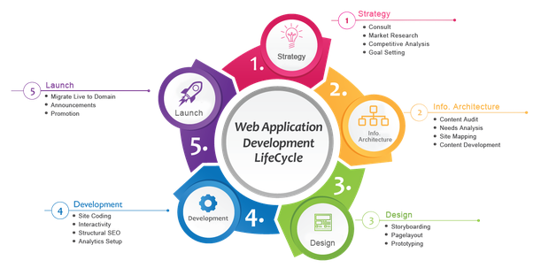

We are ardent planners. Before we leap into the project, we make sure to know in and out of your business and plan the project accordingly. Getting to know how your business functions, analyzing the target audience, examining your competitors - all go into this phase. Upon setting the features and goals, we document the plans and the custom website development begins!

We give a sneak-peak of the ‘to-be’ website through low-fidelity Wireframes. It is followed by the formation of Prototype which is the final UI design. It gives a clear picture of the Website design. You review, pour in suggestions and we tune it accordingly. Now the online website design is all set!

This phase sees all the internal coding. We have the best website developers in Bangalore and they code meticulously so that the website loads faster and functions efficiently. Every screen, movement, font, graphics, animation are done spot on so that an elegant and responsive website takes form.
Content articulates the brand story. You get to decide the brand tone and our seasoned writers pen down attractive content that conveys the brand message clearly.
Usability, responsiveness, speed, and efficiency of the website is put under test. Pixel-by-pixel, every feature is analyzed and checked for its active function. We fix all the bugs instantly and pass it to the final stage.

On D-day, the client gets to review the final website. In case of any changes, we add them immediately. Finally, the stunning website that runs seamlessly on both web & mobile is ready to get LIVE.
